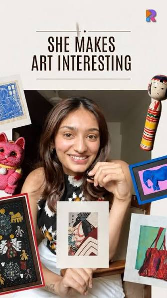
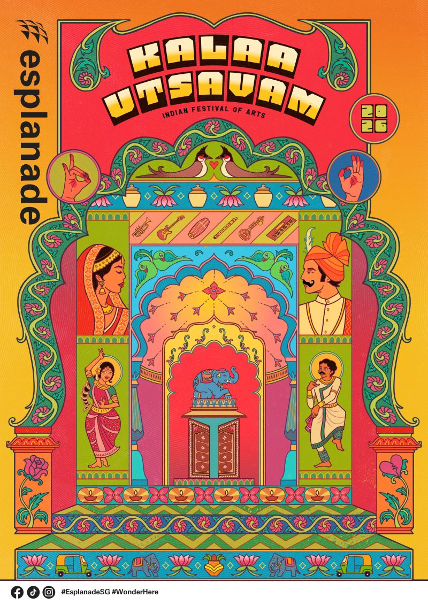

Art feels like a gallery thing
It seems expensive, formal and hard to choose. Sweets and cash feel safe.
Me Meraki's answer: 27 art forms in its menu, Diwali art and gifting collections, and an art advisor on WhatsApp who helps you choose.
A Diwali campaign for Me Meraki
Art belongs at home.
Not just in galleries.
Homes are being decorated. Gen Z is spending more at festivals. And they start looking for gifts online.
64%
growth in wall décor adoption
Vaaree Home Index 2025. Based on platform behaviour across 500,000 customers and 100M+ product views.
40%
of urban households planned festive home décor purchases
LocalCircles festive survey, 2024. 12,970 responses.
41%
of Gen Z use online search for gift ideas
YouGov and Rukam Capital, 2026. 4,002 people aged 18 to 29.
Gen Z: A Deep Dive into India's Most Influential Consumer Cohort, YouGov and Rukam Capital, 2026.
Same study. Respondents could name more than one source.
70%
say creator content helps them discover products
66%
of shoppers prefer brands with campaigns rooted in festive tradition
Sources: Vaaree Home Index 2025, LocalCircles (2024), YouGov and Rukam Capital (2026), GWI and Snapchat (2026), Hansa Research Festive Insights (2025, all shoppers, not only Gen Z). Full links at the bottom of the page.
Gen Z's top festive gifts are food and sweets (44%) and cash (39%). Hand-made art is not on the list. Three things keep it off.
It seems expensive, formal and hard to choose. Sweets and cash feel safe.
Me Meraki's answer: 27 art forms in its menu, Diwali art and gifting collections, and an art advisor on WhatsApp who helps you choose.
Creators help them discover, but nearly half research before paying. Fake sellers and reproductions are a real worry.
Me Meraki's answer: certificates of authenticity, 100% handmade work, and photo verification before dispatch.
A print on a wall is just a print. People gift what they can explain.
Me Meraki's answer: it works with 300+ master artists, pays them directly and has built its audience through content, workshops and community.
20,000+ happy customers · 4.8 stars on Google · 7+ crore rupees paid to artists in five years · seen on Shark Tank India
From memeraki.com pages as read in November 2026. Check the live site before quoting.
Gen Z does not discover gifts from brand ads. It discovers them from people it follows. So the campaign hands the story to two creators.

Craft storyteller · Cultural context
Explores Indian craft, textiles and design through accessible visual storytelling. Her role is to make the art form, and the person behind it, interesting enough to discover and share.
Proposed series
Short videos unpacking the history, motifs, process and artist behind selected artworks, ending with who the piece might make a meaningful gift for.

Animation artist · Creative interpretation
An animation and visual artist whose work explores patterns, memory and emotion. Rather than a conventional product endorsement, her contribution could make the campaign's emotional idea tangible.
Proposed film
A short animated piece where a traditional motif travels from an artist's hands into a home, becoming a symbol of a relationship or memory.
Three questions. A more thoughtful gift. Find an art direction that feels like them.